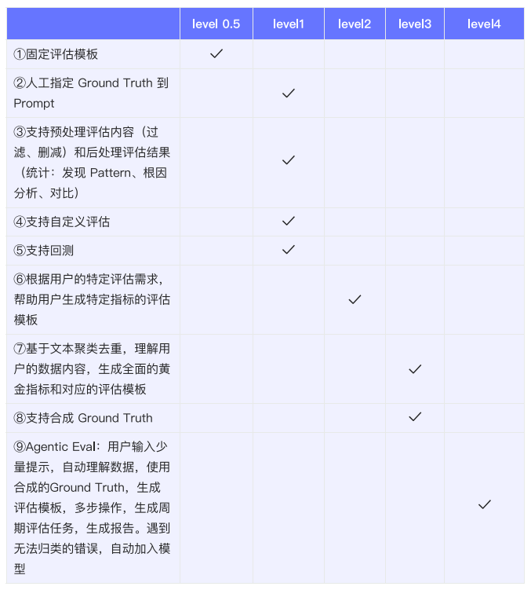
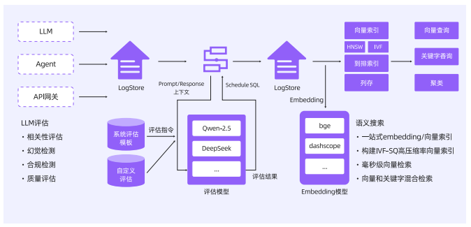

9.1 基于评估降低 AI 应用的不确定性
9.1.1 从确定性到不确定性
传统软件在很大程度上是确定性的，而 AI 应用其行为本质上是非确定性和概率性的。不确定性，就意味着对于相同的输入，它们可能产生不同的输出。
传统的 QA 流程，专为可预测的、基于规则的系统而设计，已无法充分应对这些由数据驱动的、自适应系统的挑战。
9.1.2 幻觉和不确定性的根因
AI 应用的核心功能是基于从海量数据中学到的统计模式，来预测序列中的下一个词，而非真正意义上的理解。这就导致了“幻觉”现象，即模型生成听起来合理但实际上不正确或无意义的输出。
产生幻觉和不确定性的根本原因错综复杂：数据导致的缺陷、架构与建模的产物、错位与不确定性。
9.1.3 AI 评估的重要些
从服务客户上看，评估是构建信任的核心机制。从商业视角看，严格评估直接转化为竞争优势。
AI 的非确定性催生了评估经济，这是一个由可观测性平台、持续监控、自动化评估与治理即服务构成的新生态。评估不再是阶段性任务，而是与开发并行的持续工程实践，标志着 AI 原生时代质量保障的新范式。
9.2 AI 评估体系
9.2.1 评估方法的基础二分法
1、内在评估 vs 外在评估
内在评估：侧重于孤立地评估模型输出的固有质量，而不考虑其在特定任务中的应用效果。评估的维度通常包括流畅性、连贯性、语法正确性以及事实准确性。
外在评估：通过衡量模型在特定下游任务或应用中的表现来评估其质量。
2、自动化评估 vs 人工评估
自动化评估：利用计算指标或利用其他 AI 模型来对模型输出进行打分。
人工评估：依赖人类评估员的判断来评估 AI 系统的输出质量，特别是在衡量帮助性、创造力、用户满意度等主观维度时。
在实践中，最佳的评估策略通常是自动化和人工评估的混合模式，利用自动化的效率进行大规模初步筛选，并结合人工的深度洞察力对关键或模糊的案例进行精细评估。
9.2.2 从静态到动态评估的演进
静态基准：静态基准是固定的、预先定义的数据集和任务组成。
动态评估：动态评估旨在模拟真实世界场景的复杂性和不可预测性，通过变化的变量、意外的输入和演进的上下文来测试系统。主要的动态评估方法包括：基于模拟的测试、实时对抗性基准、程序化生成。
9.2.3 现代 AI 评估的多范式全景
6 个主要的评估范式：基准测试范式、“Evals”范式、心理测量学范式、人机交互范式、形式化方法范式、社会技术范式。
一个组织的评估栈，即其选择、组合和优先排序不同评估范式的策略，深刻地揭示了该组织在性能、用户价值和风险规避之间的权衡。
9.2.4 构建一个整体性的评估体系
一个完整的评估体系应包含 8 个核心组件：
- 性能指标，包括准确率、精确率、召回率、F1 分数等。
- 鲁棒性与泛化测试
- 偏见与公平性评估
- 可解释性
- 合理性与伦理考量
- 持续监控与模型飘移检测
- 决策框架
- 自动化与人在回路
9.3 基于 LLM 的自动化评估
9.3.1 传统指标的局限性
传统的自动化评估指标，其核心是基于词汇或短语的重叠度来计算分数，这种方法对于需要捕捉语义、风格、语气和创造力等细微差别的现代生成 AI 模型来说，存在根本性不足。
另一方面，虽然人工评估被视为评估质量的“黄金标准”，但其高昂的成本、漫长的周期和固有的主观性，使其难以适应 AI 技术快速迭代的开发节奏。
9.3.2 LLM-as-a-Judge 范式介绍
LLM-as-a-Judge 范式，利用一个功能强大的大型语言模型来扮演裁判的角色，对另一个 AI 模型或应用的输出进行评分、排序或选择。
核心应用场景：数据标注、实时验证、为模型优化提供反馈。
9.3.3 LLM 裁判的评估模式
逐点评估：裁判独立地评估单个模型输出，并根据预定义的量表给出一个绝对分数。
成对比较：裁判会同时看到两个来自不同模型的、匿名的输出，并被要求判断哪一个更好，或者两者是否相当。这是聊天机器人竞技场这样的众包评估平台所采用的核心方法。
9.3.4 控制 LLM 裁判的负面影响
1、系统性偏见：位置偏见、冗长偏见、自我偏好偏见、情绪与语气偏见、评分粒度有限。
LLM 裁判产生的定量分数看似是精确的、数据驱动的，但实际上它们是通过一个充满主观偏见的过程生成的。因此一个来自 LLM 裁判的排行榜分数，并非对模型质量的纯粹客观测量，而是对裁判模型内在偏好和价值取向的反映。
2、递归依赖：能力天花板、推理幻觉。
一个较弱的 LLM 裁判无法公正地评估一个比它更强的候选模型。随着 AI 模型变得越来越强大，在评估其安全性和可靠性时，对人类专家和红队演练的依赖将会增加，而不是减少。
9.3.5 提升裁判可靠性的缓解策略
1、提示工程技术：思维链与分布推理、少样本提示、清晰的评分指南。
2、结构化缓解措施：交换位置、基于参考的评分、结束裁判输出。
3、基于模型的解决方案：微调、使用多个裁判。
4、高质量数据集：数据集、Bad Case 集合。
9.4 自动化评估落地实践
9.4.1 搭建评估系统的痛点
数据的采集、LLM Judger 自身的准确性问题、Ground Truth 的获取困难、特定领域黄金指标的定义与构建困难、评估成本高难以规模化、数据预处理的困难、从评估到可行动的断层。
9.4.2 评估系统的不同 Level

9.4.3 云原生评估系统

阿里云云原生可观测方案提供了一站式的数据采集、存储、评估、语义检索能力。
9.4.4 评估系统总结
云原生集成了一站式的 Trace 数据采集，以及前处理、评估、后处理结合在同一个计算引擎中，开发者可以在一个系统内完成所有的评估任务。
参考资料：